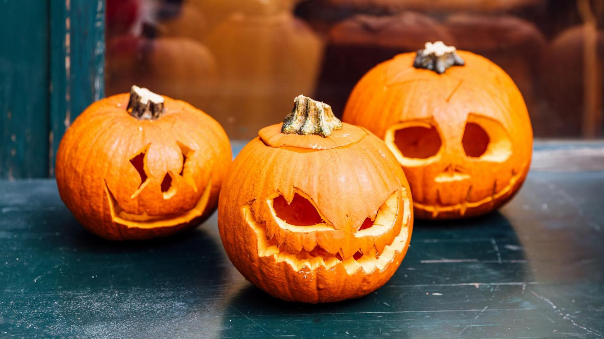

Welcome to the Pumpkin Corner

The Jack-o'-Lantern
Pumpkins have become one of the most recognizable symbols of Halloween. During Halloween, people often carve pumpkins into faces and place lights inside them to create jack-o'-lanterns.
Jack-o'-lanterns are commonly displayed outside homes during Halloween. Their spooky faces and glowing lights help create the mysterious atmosphere associated with the holiday.
From simple designs to extremely detailed carvings, pumpkins have become an important part of modern Halloween celebrations.